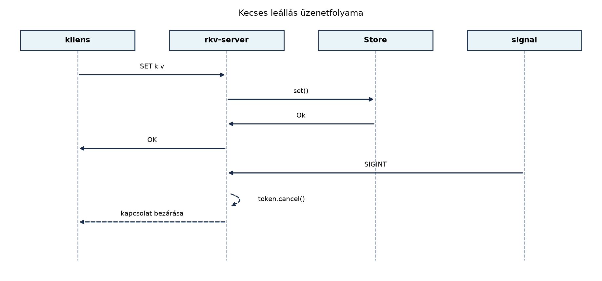

Egy C++-ban írt TCP-szerver tipikusan a következő mintát követi: egy
accept ciklus, minden kapcsolatnak egy
std::thread, és egy osztott, mutexszel védett állapot. A
kecses leállás (graceful shutdown) azonban gyakran utólag kerül be, és
ilyenkor jönnek a jellegzetes hibák: a szálak nem tudnak egy atomi
bool leállítási flagre időben reagálni, a join
a blokkoló recv miatt lefagy, a nyitott kapcsolatokra nem
lehet hatni. A Rust async modellben a leállítás is elsőrendű
állampolgár: a futó feladatok (taskok) megszakíthatók, ahelyett hogy egy
blokkoló hívásban ragadnának. Ebben az alfejezetben az rkv-hoz építünk
egy tokio-alapú TCP-szervert, amely soronkénti szöveges protokollt
beszél, és graceful shutdownnal áll le: új
kapcsolatokat nem fogad, a folyamatban lévő parancsokat befejezi, és a
klienseket hagyja kilépni.
Definíció. A keretezés (framing) az a
szabály, amely meghatározza, hol kezdődik és végződik egy üzenet egy
bájtfolyamban. A mi szerverünknél a keretezés egy sor vége
(\n): minden parancs egyetlen sorból áll, a válasz is
soronkénti (a LIST kivételével, ahol több
VALUE sor és egy záró OK sor érkezik).
Definíció. A kecses leállás (graceful shutdown) olyan leállítási folyamat, amely során a szerver nem szakítja meg azonnal az aktív kapcsolatokat, hanem: (1) leállítja az új kapcsolatok fogadását, (2) jelzi a klienseknek, hogy a folyamatban lévő művelet befejezése után lépjenek ki, és (3) megvárja a futó taskok befejeződését.
Szabály. Ha egy MutexGuard-ot
.await ponton át tartunk, a kritikus szakasz akár
tetszőlegesen hosszú ideig zárva maradhat, ami csökkenti az
áteresztőképességet, és Mutex-függő holtpontot okozhat.
Async kódban a zárat csak rövid, nem .await-elő szakaszra
szerezhetjük meg, és a .await előtt el kell engednünk.
A tokio két választ ad a megosztott állapotra: a
std::sync::Mutex (vagy RwLock) és a
tokio::sync::Mutex. A szerver a tárolót a
SharedStore-on keresztül éri el (Mutex,
RwLock, csatornák és a megosztott rkv), amely belül std
mutexet használ, és a zárat soha nem tartja
.await-en át: minden tárolóművelet szinkron. A
művelet viszont blokkolhat (a FileStore
fájlírást és fsync-et végez), ezért a szerver nem az
executor szálán futtatja, hanem
tokio::task::spawn_blocking-be teszi (lásd lent). A
tokio::sync::Mutex akkor jön jól, ha a védett szakasz maga
is .await-el.
Szabály (erőforráskorlátok). Egy hálózatra nyitott
szerver három erőforrását korlátoznia kell: (1) a kérés mérete
(max_frame): sorvég nélküli, végtelen bemenet nem növelheti
a memóriát; (2) az egyidejű kapcsolatok száma
(max_connections): a többlet kontrollált hibát
(ERR server busy) kap; (3) a blokkoló munka nem
foglalhatja le az executor szálait. A korlát túllépése mindig explicit,
protokoll szerinti hibaválasz, nem csendes csonkolás.
Definíció. A
tokio_util::sync::CancellationToken egy olyan jelzés,
amelyet cancel() hívással lehet bekapcsolni, és a váró
taskok .cancelled()-re ébrednek. Jól használható a
leállítási jel terjesztésére: minden task kap egy klónt, és
select!-ben versenyezteti a normál eseménnyel.
Egy C++ szerver vázlata szálakkal és leállítási flaggel:
#include <atomic>
#include <iostream>
#include <thread>
#include <vector>
#include <sys/socket.h>
#include <netinet/in.h>
std::atomic<bool> stop{false};
void handle_client(int fd) {
char buf[1024];
while (!stop) {
ssize_t n = recv(fd, buf, sizeof(buf), 0);
if (n <= 0) break;
// feldolgozás...
}
close(fd);
}
int main() {
int listener = socket(AF_INET, SOCK_STREAM, 0);
// bind, listen...
std::vector<std::thread> threads;
while (!stop) {
int fd = accept(listener, nullptr, nullptr);
threads.emplace_back(handle_client, fd);
}
// leállítás: stop = true; majd join...
}A probléma: ha a kliens nem küld adatot, a recv blokkol,
és a stop flaget soha nem veszi észre; a join
a blokkoló szálon függ. Ezt jellemzően poll-lal,
shutdown hívással vagy timeouttal kell megkerülni. A
Rust/tokio szerver ehelyett select!-ben figyeli a
megszakítást, és a task kilép a futó .await-ből akkor is,
ha épp sorra várt.
A Rust szerver fő hurka (vázlat; a teljes, JoinSet-es
változat a labor lib.rs-ében van):
use rkv_core::SharedStore;
use tokio::net::TcpListener;
use tokio_util::sync::CancellationToken;
async fn run_server(listener: TcpListener, store: SharedStore, token: CancellationToken) {
loop {
tokio::select! {
_ = token.cancelled() => break,
res = listener.accept() => {
let (socket, addr) = match res {
Ok(v) => v,
Err(e) => { eprintln!("accept error: {e}"); continue; }
};
let store = store.clone();
let token = token.clone();
tokio::spawn(async move {
if let Err(e) = handle_client(socket, store, token).await {
eprintln!("client {addr}: {e}");
}
});
}
}
}
}A különbség: a select! a listener accept és
a leállítási token között választ; ha a token megszakad, a ciklus kilép
anélkül, hogy új kapcsolatot fogadna. Ez a vázlat csak a leállás első
fázisát mutatja: a tokio::spawn-nal indított klienstaskokat
senki nem várja meg, és a main visszatérése a runtime-mal
együtt félbeszakítaná őket. A labor teljes run_server
függvénye ezért JoinSet-ben tartja nyilván a
klienstaskokat, és a megszakítás után határidővel megvárja őket.
Az rkv-szerver protokollja soralapú. A kliens egyetlen sora egy parancsot tartalmaz:
GET <kulcs>
SET <kulcs> <érték>
DEL <kulcs>
LIST [<prefix>]A szerver válaszai:
OK – SET és DEL sikeres; LIST lezáró sora
VALUE <kulcs> <érték> – GET találat vagy LIST elem
NOTFOUND – GET/DEL nem létező kulcs esetén
ERR <üzenet> – hibás parancs vagy belső hibaA szöveges réteg csak szöveg-biztos kulcsokra és értékekre
való. Bármilyen bájtsor átviteléhez (a
[0xFF, 0x0A, 0x0D]-tól az üres értékig) külön, hexa kódolt
bináris réteg van:
SETX <hexkulcs> <hexérték> – a kulcs és az érték hexa; az üres érték jele: -
GETX <hexkulcs> – válasz: VALUEX <hexkulcs> <hexérték> vagy NOTFOUNDA [0,255,10,13] érték így
SETX 62696e 00ff0a0d, az üres érték
SETX 62696e -; a GETX 62696e pontosan ugyanazt
a hexát adja vissza. A szöveges SET k ff ezzel szemben az
ff két ASCII karaktert tárolja, nem a 0xFF
bájtot: a két réteg elkülönül.
A LIST válasza: minden egyező kulcshoz egy-egy
VALUE sor, majd egy OK sor. Egy munkamenet
nc-vel:
$ nc localhost 8080
SET hello world
OK
GET hello
VALUE hello world
LIST he
VALUE hello world
OK
DEL hello
OK
GET hello
NOTFOUNDA protokoll nyelvtanát az Az enum mint
összeg-típus és az Option a null helyett–Mintaillesztés: match, if let, let else és a minták
alfejezet rögzítette, és az rkv-core Command
típusának FromStr implementációja valósítja meg (A standard trait-ek: konverziók, formázás, Default,
Deref, Borrow): a kulcs nem tartalmazhat szóközt, a SET
értéke a kulcs utáni szóköztől a sor végéig tart (tartalmazhat szóközt),
a felesleges argumentum hiba. A hibás kérés
ERR <üzenet> választ kap, a kapcsolat pedig
használható marad. A szöveges rétegben egy bejegyzés akkor
szöveg-biztos, ha a kulcs nem üres és nem tartalmaz szóközt
vagy vezérlőkaraktert, az érték pedig nem üres, érvényes UTF-8, és nem
tartalmaz vezérlőkaraktert (sortörést sem). Az rkv-core, az
FFI és a cxx réteg tetszőleges UTF-8 kulcsot és bájtértéket tárolhat,
ezért a válaszformázás védekezik: a nem szöveg-biztos érték
GET-re ERR value is not text-safe, use GETX
választ ad (nem csonkolódik, és nem tud új válaszsort kezdeni, például
egy OK-t tartalmazó értékkel), a LIST pedig az
ilyen bejegyzéseket
VALUEX <hexkulcs> <hexérték> sorban adja, így a
válasz mindig soronként értelmezhető, és OK-ra végződik. A
kérés mérete korlátos (lásd a ServerConfig-ot).
A bejövő adatfolyam bájtok sorozata; a keretezést a sorvég
(\n) adja. A kézenfekvő BufReader::lines() /
read_line viszont korlátlan: egy sorvég
nélküli, végtelen bemenet addig növeli a sor pufferét, amíg a memória el
nem fogy. Ezért a szerver saját read_frame függvénnyel
olvas, amely a take(max_frame + 1) adapterrel korlátozza a
pufferbe kerülő bájtokat. Három kimenete van: teljes sor, túl hosszú sor
(a puffer meghaladja a max_frame-et) és fájlvég:
async fn read_frame<R>(reader: &mut R, buf: &mut Vec<u8>, max_frame: usize) -> io::Result<Frame>
where
R: AsyncBufRead + Unpin,
{
buf.clear();
let n = reader
.take(max_frame as u64 + 1)
.read_until(b'\n', buf)
.await?;
Ok(if n == 0 {
Frame::Eof
} else if buf.len() > max_frame {
Frame::TooLong
} else if buf.ends_with(b"\n") {
Frame::Line
} else {
Frame::Eof // csonka, sorvég nélküli maradék: a kliens lezárt
})
}Túl hosszú sornál a szerver ERR line too long választ
küld, és lezárja a kapcsolatot. Ez tudatos házirend, nem elvi kényszer:
a keretezés a következő \n-ig tartó eldobással
(drain-until-LF) elvileg újraszinkronizálható volna, de ehhez a
szervernek a maradék bemenetet előírt bájt- és időkeretig kellene
olvasnia és eldobnia (például 64 KiB és 1 s), majd a sornál
újrapróbálnia. Ez a korlátos erőforrás-védelem mellett is bonyolítja a
protokollt, és a lassú vagy rosszindulatú kliens miatt a kapcsolat
hosszú ideig foglalt maradhat; a lezárás egyszerűbb, kiszámítható és a
támadási felületet is csökkenti. A választott korlátot a
ServerConfig::max_frame adja. (A tokio
AsyncBufReadExt::read_until dokumentáltan
megszakításbiztos: a már beolvasott bájtok a hívó Vec-jében
maradnak. A saját read_frame wrapper viszont a
hívás elején buf.clear()-t végez, ezért a megszakítás után
egy újabb hívás eldobná a részleges adatot. Ez itt elfogadható, mert a
megszakítás csak a leállításkor történik, és a kapcsolat ekkor úgyis
lezárul; ha az olvasást folytatni kellene, a clear()-t csak
teljes keret feldolgozása után szabadna végezni. Lásd az Tokio: taskok, I/O, csatornák, select és
megszakítás alfejezetet.)
A socket.into_split() az olvasó- és íróoldalt
különválasztja. A BufReader a read_half-ból
olvas, a BufWriter a write_half-ra pufferel. A
klienst kezelő függvény szerkezete: a ciklus a beolvasást a leállítási
tokennel versenyezteti, a már beolvasott parancsot viszont mindig
végrehajtja és megválaszolja:
loop {
let frame = tokio::select! {
_ = token.cancelled() => break,
frame = read_frame(&mut reader, &mut buf, max_frame) => frame?,
};
match frame {
Frame::Eof => break,
Frame::TooLong => {
reply(&mut writer, "ERR line too long").await?;
break;
}
Frame::Line => { /* végrehajtás és válasz, lásd a labort */ }
}
}
writer.shutdown().awaitA válasz írását szándékosan nem tesszük
select!-be: a már beolvasott parancs válaszát a leállás
alatt is teljesen elküldjük.
Két részlet a select!-hez. (1) A
break típusa. A select! minden ágának
azonos típusú kifejezést kell adnia. Az
_ = token.cancelled() => break ág break
kifejezése ! (never) típusú, amely tetszőleges típusra
koerciálható, ezért illeszkedik a másik ág Frame típusához
(a frame? szintén Frame). (2) Ági
elsőbbség. Alapértelmezésben a select! a
kész ágak közül véletlenszerűen választ (fairség), és ha egy ág
már kész, nem ad elsőbbséget a leállításnak: ha a token már megszakadt,
és közben egy teljes sor is olvasható, bármelyik ág nyerhet. Ha a kódnak
ezt az elsőbbséget kell kikényszerítenie, a select! elejére
írt biased; rögzített, fentről lefelé haladó sorrendet ad
(a cancelled() ág kerüljön az első helyre), vagy a
leállítás állapotát explicit ellenőrizzük a ciklus elején
(if token.is_cancelled() { break; }). A fenti kód ezt az
elsőbbséget nem ígéri: a már beolvasott parancs végrehajtása és
megválaszolása a leállás alatt is megtörténik.
Szabály (flush). A tokio BufWriter a
kis válaszokat a belső pufferében tartja, amíg az meg nem telik vagy
flush-t nem hívunk. Ha minden válasz után nincs
flush().await, a kliens a válaszra vár, a szerver a
következő parancsra: a kapcsolat beragad. A tokio BufWriter
eldobása ráadásul nem üríti a puffert (aszinkron ürítést
Drop nem tud végezni), a bent maradt bájtok elvesznek.
Ezért minden teljes protokollválasz után flush().await?,
kilépéskor pedig shutdown().await? következik; ez utóbbi
üríti a puffert és lezárja a küldő irányt.
A tokio_util::codec modul kifinomultabb keretezést ad:
például hosszprefixes vagy szigorúbb szöveges protokollt
(LinesCodec::new_with_max_length), és a Framed
típus Stream-ként kezeli a bejövő kereteket. A mi
protokollunknál a saját read_frame elegendő; a codecalapú
megoldást nagyobb rendszereknél érdemes megfontolni.
SharedStore és blokkoló munkaA szerver több klienssel dolgozik, ezért a tárolót minden tasknak el
kell érnie. A típus a Mutex, RwLock, csatornák és a
megosztott rkv alfejezet SharedStore-ja: klónozható,
Send + Sync, és bármely Storage-ot
(MemStore, FileStore) burkol, így a szerver
nem tudja, mi áll mögötte. A zár a SharedStore metódusain
belül van; a szerver kódja sehol nem tart zárat .await-en
át.
A kritikus rész egy kérés feldolgozása. A process_line
szinkron függvény: értelmezi a sort (FromStr), végrehajtja
a parancsot (SharedStore::apply), és a protokoll szerinti
választ formázza:
pub fn process_line(line: &str, store: &SharedStore) -> String {
let command = match line.parse::<Command>() {
Ok(command) => command,
Err(e) => return format!("ERR {e}"),
};
let response = match store.apply(&command) {
Ok(response) => response,
Err(e) => return single_line(&format!("ERR {e}")),
};
match (&command, response) {
(_, Response::Ok) => "OK".to_string(),
(_, Response::NotFound) => "NOTFOUND".to_string(),
(Command::Get(key), Response::Value(bytes)) => match String::from_utf8(bytes) {
Ok(text) => format!("VALUE {key} {text}"),
Err(_) => format!("ERR value of {key} is not valid UTF-8"),
},
// ... Entries (LIST) és a többi ág: lásd a labor teljes lib.rs-ét
}
}Mivel a FileStore fájlműveletei (írás,
fsync) blokkolnak, a process_line nem
az executor szálán fut: a kliens task
tokio::task::spawn_blocking-gel indítja, és a
JoinHandle-t await-eli. Így egy lassú
fájlművelet csak a blokkoló szálkészlet egy szálát köti le, a többi task
(új kapcsolatok fogadása, más kliensek olvasása/írása) tovább halad. A
tároló soros szerződése (a SharedStore mutexe) megmarad:
két lassú írás egymásra vár, de az executort nem állítja meg. A shutdown
szerződés: a spawn_blocking closure-je, ha elindult, nem
szakítható meg, ezért a leállítás megvárja a futó tárolóműveletet
(legfeljebb shutdown_grace ideig).
A process_line a zárat egyetlen apply
hívásra szerzi meg, és a válasz formázása már zár nélkül történik. Ha a
zárat az .await-ig kiterjesztenénk, a tárolót minden kliens
megvárná; ezt mutatja a következő, szándékosan rossz minta (a
std guard nem Send, ezért a
tokio::spawn el is utasítaná):
// Ez a változat szándékosan rossz tervezési minta:
async fn handle_client_bad(socket: TcpStream, store: Arc<std::sync::Mutex<dyn Storage + Send>>) {
let mut lines = BufReader::new(socket).lines();
while let Ok(Some(line)) = lines.next_line().await {
let mut guard = store.lock().unwrap(); // a zár az .await-en át él
let response = process(&mut **guard, &line);
reply(&response).await; // .await a guarddal a kezünkben
}
}A leállítás folyamata a következő: 1. A main függvény
létrehoz egy CancellationToken példányt. 2. Egy külön task
figyeli a Ctrl-C jelet
tokio::signal::ctrl_c().await segítségével, majd meghívja a
token.cancel()-t. 3. 1. fázis: a listener
select!-ben figyeli a token.cancelled()-et,
így az accept ciklus kilép, a listener eldobódik, új
kapcsolat nem jön létre. 4. 2. fázis: a klienstaskok a
következő sor olvasásakor észreveszik a megszakítást. A már beolvasott
parancsot végrehajtják, a választ kiírják és flush-elik,
majd shutdown-nal lezárják a kapcsolatot. 5. A
run_server a klienstaskokat egy JoinSet-ben
tartja nyilván, és a megszakítás után megvárja őket, legfeljebb
shutdown_grace ideig. A határidő után a még futó taskokat
(például egy lassan olvasó kliens miatt beragadt írást) megszakítja
(abort). 6. A main csak a
run_server visszatérése után írja ki a
shutdown complete sort; ekkor már minden klienstask véget
ért vagy megszakadt. A main visszatérése leállítja
a runtime-ot, ezért a nyilvántartott taskokat előtte kell
megvárni. 7. Három külön szerződés. (a)
Kapcsolatlezárás: a shutdown_grace ideig vár a
szerver a futó parancsokra, utána a klienstaskot megszakítja
(JoinSet::shutdown). (b) Blokkoló tárolóművelet:
az elindult spawn_blocking munka nem szakítható meg (egy
fsync sem), a task megszakítása csak a
JoinHandle-t dobja el; a művelet tovább futhat, és a
run_server visszatérése nem garantálja a
befejezését. (c) Folyamatkilépés: a runtime eldobása a futó
blokkoló munkát korlátlanul megvárná, ezért a main a
runtime-ot shutdown_timeout-tal állítja le; ha a határidő
lejár, a folyamat a háttérben futó művelet befejezése nélkül lép ki. Nem
megszakítható fsync-re tehát nem ígérünk kemény leállási
határt.
A főprogram (main.rs) rövid: konfiguráció és indítás, a
kiszolgáló logika a könyvtárban (lib.rs) van. Teljes kódja
a laborban szerepel; lényege:
let store = SharedStore::new(MemStore::new());
let token = CancellationToken::new();
// ... egy task a Ctrl-C-re: token.cancel() ...
run_server(listener, store, token).await;
println!("shutdown complete"); // a kapcsolatok lezárultak; a blokkoló munka vége külön kérdésA tokio::signal::ctrl_c() a Unix SIGINT
jelet aszinkron módon várja. A haladóbb alkalmazások
tracing-gel naplózhatják az eseményeket; ezt a Naplózás és megfigyelhetőség alfejezetben tesszük
hozzá.
A leállítás és a klienskezelés kapcsolatát foglalja össze az alábbi ábra:

Az ábrán látható, hogy a SET parancs feldolgozása közben
érkező SIGINT nem szakítja félbe a tároló műveletet; a
token megszakad, de a kliens csak a válasz elküldése és
flush-e után lép ki. Ezt a lenti teljes kód garantálja: a
válaszírás nincs select!-ben, a run_server
pedig megvárja a klienstaskokat. A garancia korlátja a
shutdown_grace határidő: ha egy kliens addig sem olvassa ki
a választ, a task megszakad, és a válasz elveszhet. Ez a kecses leállás
lényege: a vállalt munka befejeződik, de a leállás nem tarthat
korlátlanul.
Munkakönyvtár: ~/rust-labor/rkv/
A kiinduló állapot a Tokio: taskok, I/O,
csatornák, select és megszakítás és a megelőző alfejezetek
ellenőrzési pontja: az rkv-core exportálja a
Command, Storage, MemStore,
FileStore, SharedStore típusokat, a
Command FromStr/Display-jét és az
apply függvényt. A labor célja az rkv-server
bináris és könyvtár létrehozása, amely az rkv-core
SharedStore-ját használja. A kiszolgáló logika a
src/lib.rs-ben van (így az integrációs tesztek
importálhatják), a src/main.rs pedig rövid indítóprogram:
egy bináris crate pub függvényét más crate nem tudja
importálni.
cd ~/rust-labor/rkv
cargo new rkv-server(A cargo new binárist hoz létre; a
src/lib.rs-t kézzel adjuk hozzá a 2. lépésben, a Cargo
mindkettőt felismeri: a rkv_server könyvtár- és az
rkv-server bináris célt.)
Kódblokk — fájl: Cargo.toml (workspace gyökér)
· művelet: az "rkv-server" felvétele a members
listába · ellenőrzés: cargo metadata --no-deps listázza a
tagot
[workspace]
resolver = "3"
members = [
"rkv-core",
"rkv-cli",
"rkv-server",
]Kódblokk — fájl: rkv-server/Cargo.toml ·
művelet: teljes csere · ellenőrzés:
cargo build -p rkv-server
[package]
name = "rkv-server"
version = "0.1.0"
edition = "2024"
rust-version = "1.89"
[dependencies]
rkv-core = { path = "../rkv-core" }
tokio = { version = "1", features = ["full"] }
tokio-util = { version = "0.7", features = ["rt"] }
anyhow = "1"
[dev-dependencies]
tempfile = "3"A tokio-util rt feature a
CancellationToken használatához szükséges. (Az
rkv-core a Miért Rust? Biztonság,
teljesítmény, és ami a C++-ban hiányzik óta ismert; a
tempfile csak a tesztekben kell.)
rkv-server/src/lib.rsKódblokk — fájl: rkv-server/src/lib.rs ·
művelet: új fájl · ellenőrzés:
cargo build -p rkv-server
use std::io;
use std::sync::Arc;
use std::time::Duration;
use rkv_core::{Command, Response, SharedStore};
use tokio::io::{AsyncBufRead, AsyncBufReadExt, AsyncReadExt, AsyncWriteExt, BufReader, BufWriter};
use tokio::net::{TcpListener, TcpStream};
use tokio::sync::Semaphore;
use tokio::task::JoinSet;
use tokio_util::sync::CancellationToken;
/// A szerver erőforráskorlátai.
#[derive(Debug, Clone)]
pub struct ServerConfig {
/// Egy kérés (a sorvéggel együtt) legfeljebb ennyi bájt lehet: a kulcs és az érték együtt.
pub max_frame: usize,
/// Egyidejű kapcsolatok felső határa; a többletet "ERR server busy" válasszal utasítjuk el.
pub max_connections: usize,
/// A leállás 2. fázisának határideje: eddig várunk a futó klienstaskokra.
pub shutdown_grace: Duration,
/// Egy válasz legfeljebb ennyi bájt (a `LIST` miatt); a nagyobbat `ERR response too large` váltja fel.
pub max_response: usize,
}
impl Default for ServerConfig {
fn default() -> Self {
Self {
max_frame: 64 * 1024,
max_connections: 1024,
shutdown_grace: Duration::from_secs(5),
max_response: 1024 * 1024,
}
}
}
/// A `max_frame` felső határa: a `take(max_frame + 1)` és a puffer lefoglalása ennél nagyobbra nem értelmes.
pub const MAX_FRAME_LIMIT: usize = 64 * 1024 * 1024;
impl ServerConfig {
/// A belépési ponton is érvényesített ellenőrzés: a publikus mezők a builderen kívül is
/// beállíthatók, ezért a `run_server_with` ezt hívja. A `Semaphore` kapacitáshatárát is betartja.
pub fn validate(&self) -> Result<(), ConfigError> {
if self.max_frame == 0 {
return Err(ConfigError::Zero("max_frame"));
}
if self.max_frame > MAX_FRAME_LIMIT {
return Err(ConfigError::TooLarge("max_frame"));
}
if self.max_connections == 0 {
return Err(ConfigError::Zero("max_connections"));
}
if self.max_connections > Semaphore::MAX_PERMITS {
return Err(ConfigError::TooLarge("max_connections"));
}
if self.max_response == 0 {
return Err(ConfigError::Zero("max_response"));
}
Ok(())
}
}
/// A `ServerConfig` érvénytelen korlátja (a `validate` és a builder `build` hibája).
#[derive(Debug, PartialEq, Eq)]
#[non_exhaustive]
pub enum ConfigError {
/// A megnevezett korlát nulla, ami a szervert használhatatlanná tenné.
Zero(&'static str),
/// A megnevezett korlát a megengedett felső határnál nagyobb.
TooLarge(&'static str),
}
impl std::fmt::Display for ConfigError {
fn fmt(&self, f: &mut std::fmt::Formatter<'_>) -> std::fmt::Result {
match self {
ConfigError::Zero(field) => write!(f, "a(z) {field} korlát nem lehet nulla"),
ConfigError::TooLarge(field) => write!(f, "a(z) {field} korlát túl nagy"),
}
}
}
impl std::error::Error for ConfigError {}
/// Egy beolvasott keret eredménye.
#[derive(Debug, PartialEq, Eq)]
enum Frame {
/// Teljes, `\n`-nel lezárt sor van a pufferben.
Line,
/// A sor hosszabb a megengedettnél (a puffer legfeljebb `max_frame + 1` bájtot tartalmaz).
TooLong,
/// A kapcsolat lezárult (egy csonka, sorvég nélküli maradékot eldobunk).
Eof,
}
/// Egy sort olvas legfeljebb `max_frame` bájtig. A `take` korlátozza a pufferbe kerülő
/// bájtok számát, így sorvég nélküli, végtelen bemenet sem növeli a memóriát.
async fn read_frame<R>(reader: &mut R, buf: &mut Vec<u8>, max_frame: usize) -> io::Result<Frame>
where
R: AsyncBufRead + Unpin,
{
buf.clear();
let n = reader
.take(max_frame as u64 + 1)
.read_until(b'\n', buf)
.await?;
Ok(if n == 0 {
Frame::Eof
} else if buf.len() > max_frame {
Frame::TooLong
} else if buf.ends_with(b"\n") {
Frame::Line
} else {
Frame::Eof
})
}
/// Egy kérés feldolgozása: értelmezés, végrehajtás, válasz. Szinkron és blokkolhat
/// (a `FileStore` fájlműveleteket végez), ezért a hívó `spawn_blocking`-ben futtatja.
///
/// Két réteg van: a szöveges `GET/SET/DEL/LIST` az olvasható, szöveg-biztos
/// kulcsokra és értékekre való; a `GETX/SETX` hexa kulccsal és értékkel bármilyen
/// bájtsort átvisz (az üres értéket a `-` jelöli).
pub fn process_line(line: &str, store: &SharedStore) -> String {
process_line_with(line, store, ServerConfig::default().max_response)
}
/// Mint a `process_line`, de a válasz legfeljebb `max_response` bájt: a nagyobb `LIST`-et
/// `ERR response too large` váltja fel (a részleges lista félrevezető volna). A tároló
/// `list` hívása még a teljes találati halmazt másolja; a valódi folyamatos küldéshez
/// iterátor-alapú `Storage` API kellene.
pub fn process_line_with(line: &str, store: &SharedStore, max_response: usize) -> String {
let reply = process_line_inner(line, store);
if reply.len() > max_response {
"ERR response too large".to_string()
} else {
reply
}
}
fn process_line_inner(line: &str, store: &SharedStore) -> String {
if let Some(reply) = process_binary(line, store) {
return reply;
}
let command = match line.parse::<Command>() {
Ok(command) => command,
Err(e) => return single_line(&format!("ERR {e}")),
};
let response = match store.apply(&command) {
Ok(response) => response,
Err(e) => return single_line(&format!("ERR {e}")),
};
match (&command, response) {
(_, Response::Ok) => "OK".to_string(),
(_, Response::NotFound) => "NOTFOUND".to_string(),
(Command::Get(key), Response::Value(bytes)) => match text_safe(key, &bytes) {
Some(text) => format!("VALUE {key} {text}"),
None => "ERR value is not text-safe, use GETX".to_string(),
},
(_, Response::Entries(items)) => {
let mut out = String::new();
for (key, bytes) in items {
match text_safe(&key, &bytes) {
Some(text) => out.push_str(&format!("VALUE {key} {text}\n")),
// Ami szövegként nem ábrázolható, az hexa alakban jön: VALUEX <hexkulcs> <hexérték>
None => out.push_str(&format!(
"VALUEX {} {}\n",
to_hex(key.as_bytes()),
to_hex(&bytes)
)),
}
}
out.push_str("OK");
out
}
(_, Response::Value(_)) => "ERR internal error".to_string(),
}
}
/// Szöveg-biztos-e a bejegyzés: a kulcs érvényes protokollkulcs (nem üres, nincs benne
/// szóköz vagy vezérlőkarakter), az érték érvényes UTF-8 és nincs benne vezérlőkarakter
/// (így nem tud új választ kezdeni).
fn text_safe<'a>(key: &str, bytes: &'a [u8]) -> Option<&'a str> {
let key_ok = !key.is_empty() && !key.chars().any(|c| c.is_whitespace() || c.is_control());
let text = std::str::from_utf8(bytes).ok()?;
(key_ok && !text.is_empty() && !text.chars().any(char::is_control)).then_some(text)
}
fn to_hex(bytes: &[u8]) -> String {
if bytes.is_empty() {
return "-".to_string();
}
bytes.iter().map(|b| format!("{b:02x}")).collect()
}
fn from_hex(text: &str) -> Result<Vec<u8>, String> {
if text == "-" {
return Ok(Vec::new());
}
if text.is_empty() || !text.len().is_multiple_of(2) || !text.is_ascii() {
return Err("invalid hex".to_string());
}
(0..text.len())
.step_by(2)
.map(|i| u8::from_str_radix(&text[i..i + 2], 16).map_err(|_| "invalid hex".to_string()))
.collect()
}
/// `SETX <hexkulcs> <hexérték|->` és `GETX <hexkulcs>`; más sorra `None`.
fn process_binary(line: &str, store: &SharedStore) -> Option<String> {
let (verb, rest) = line.split_once(' ').unwrap_or((line, ""));
let result = match verb {
"SETX" => {
let (k, v) = rest.split_once(' ')?;
decode_key(k).and_then(|key| {
let value = from_hex(v)?;
store.set(key, value).map_err(|e| e.to_string())?;
Ok("OK".to_string())
})
}
"GETX" => {
decode_key(rest).and_then(|key| match store.get(&key).map_err(|e| e.to_string())? {
Some(bytes) => Ok(format!(
"VALUEX {} {}",
to_hex(key.as_bytes()),
to_hex(&bytes)
)),
None => Ok("NOTFOUND".to_string()),
})
}
_ => return None,
};
Some(result.unwrap_or_else(|e| single_line(&format!("ERR {e}"))))
}
fn decode_key(hex: &str) -> Result<String, String> {
let bytes = from_hex(hex)?;
match String::from_utf8(bytes) {
Ok(key) if !key.is_empty() => Ok(key),
_ => Err("key must be non-empty UTF-8".to_string()),
}
}
/// A protokoll soronkénti: a hibaüzenetekből eltávolítjuk a sortörést.
fn single_line(text: &str) -> String {
text.replace(['\n', '\r'], " ")
}
async fn reply<W>(writer: &mut W, response: &str) -> io::Result<()>
where
W: AsyncWriteExt + Unpin,
{
writer.write_all(response.as_bytes()).await?;
writer.write_all(b"\n").await?;
writer.flush().await
}
async fn handle_client(
socket: TcpStream,
store: SharedStore,
token: CancellationToken,
max_frame: usize,
max_response: usize,
) -> io::Result<()> {
let (read_half, write_half) = socket.into_split();
let mut reader = BufReader::new(read_half);
let mut writer = BufWriter::new(write_half);
let mut buf = Vec::new();
loop {
// A beolvasás megszakítható (a leállítás kilép a ciklusból); a már beolvasott
// parancsot viszont mindig végrehajtjuk és megválaszoljuk.
let frame = tokio::select! {
_ = token.cancelled() => break,
frame = read_frame(&mut reader, &mut buf, max_frame) => frame?,
};
match frame {
Frame::Eof => break,
Frame::TooLong => {
// A keretezés nem állítható vissza: hibaüzenet, majd lezárás.
reply(&mut writer, "ERR line too long").await?;
break;
}
Frame::Line => {
let line = buf.strip_suffix(b"\n").unwrap_or(&buf);
let line = line.strip_suffix(b"\r").unwrap_or(line);
let response = match std::str::from_utf8(line) {
Ok(line) => {
let (line, store) = (line.to_owned(), store.clone());
// A tárolóművelet blokkolhat: nem az executor szálán fut.
tokio::task::spawn_blocking(move || {
process_line_with(&line, &store, max_response)
})
.await
.unwrap_or_else(|_| "ERR internal error".to_string())
}
Err(_) => "ERR request is not valid UTF-8".to_string(),
};
reply(&mut writer, &response).await?;
}
}
}
// A puffer ürítése és a küldő irány lezárása kilépés előtt.
writer.shutdown().await
}
/// A szerver az alapértelmezett korlátokkal.
pub async fn run_server(listener: TcpListener, store: SharedStore, token: CancellationToken) {
run_server_with(listener, store, token, ServerConfig::default()).await;
}
/// A szerver megadott korlátokkal. Visszatérése előtt minden klienstaskot megvár (vagy határidő után megszakít).
pub async fn run_server_with(
listener: TcpListener,
store: SharedStore,
token: CancellationToken,
config: ServerConfig,
) {
config.validate().expect("érvénytelen ServerConfig");
const REJECT_LIMIT: usize = 64;
let reject_slots = Arc::new(Semaphore::new(REJECT_LIMIT));
let slots = Arc::new(Semaphore::new(config.max_connections));
let mut clients = JoinSet::new();
loop {
tokio::select! {
_ = token.cancelled() => break,
res = listener.accept() => {
let (mut socket, addr) = match res {
Ok(v) => v,
Err(e) => { eprintln!("accept error: {e}"); continue; }
};
let Ok(permit) = Arc::clone(&slots).try_acquire_owned() else {
// Betelt a kapcsolatkeret: rövid, korlátos idejű elutasítás, korlátos számú
// párhuzamos elutasító taskkal; a többi többlet-kapcsolat azonnal lezárul.
if let Ok(reject_permit) = Arc::clone(&reject_slots).try_acquire_owned() {
clients.spawn(async move {
let _reject_permit = reject_permit;
let _ = tokio::time::timeout(
Duration::from_millis(200),
socket.write_all(b"ERR server busy\n"),
).await;
});
}
continue;
};
let (store, token) = (store.clone(), token.clone());
clients.spawn(async move {
// A permit a task végéig él: a kapcsolat bezárásakor felszabadul.
let _permit = permit;
if let Err(e) = handle_client(socket, store, token, config.max_frame, config.max_response).await {
eprintln!("client {addr}: {e}");
}
});
}
// A befejeződött taskok eredményét folyamatosan begyűjtjük.
Some(res) = clients.join_next(), if !clients.is_empty() => {
if let Err(e) = res {
eprintln!("client task: {e}");
}
}
}
}
// 1. fázis: új kapcsolatot nem fogadunk.
drop(listener);
// 2. fázis: a futó parancsok befejezése és a válaszok ürítése, határidővel.
let drain = async {
while let Some(res) = clients.join_next().await {
if let Err(e) = res {
eprintln!("client task: {e}");
}
}
};
if tokio::time::timeout(config.shutdown_grace, drain).await.is_err() {
eprintln!("shutdown grace expired; aborting {} client(s)", clients.len());
clients.shutdown().await;
}
}A ServerConfig három korlátot rögzít:
max_frame (egy kérés bájtban, a sorvéggel együtt),
max_connections (a Semaphore permitjei; egy
permit a kapcsolat teljes élettartama alatt foglalt, a task végén
felszabadul), shutdown_grace (a leállás 2. fázisának
határideje). A túllépés protokoll szerinti hiba:
ERR line too long, illetve
ERR server busy.
rkv-server/src/main.rsKódblokk — fájl: rkv-server/src/main.rs ·
művelet: teljes csere · ellenőrzés:
cargo build -p rkv-server
use anyhow::Result;
use rkv_core::{FileStore, MemStore, SharedStore};
use rkv_server::run_server;
use tokio::net::TcpListener;
use tokio_util::sync::CancellationToken;
fn main() -> Result<()> {
let rt = tokio::runtime::Runtime::new()?;
let outcome = rt.block_on(serve());
// A runtime eldobása a futó `spawn_blocking` munkát korlátlanul megvárná: időkorlátot adunk.
// Ha lejár, a folyamat a háttérben futó tárolóművelet befejezése nélkül lép ki.
rt.shutdown_timeout(std::time::Duration::from_secs(5));
outcome
}
async fn serve() -> Result<()> {
// Használat: rkv-server [cím] [--data-dir <könyvtár>]
// `--data-dir` nélkül memóriabeli tároló; vele a FileStore (snapshot + napló) fut.
let mut addr = "127.0.0.1:8080".to_string();
let mut data_dir: Option<std::path::PathBuf> = None;
let mut args = std::env::args().skip(1);
while let Some(arg) = args.next() {
if arg == "--data-dir" {
data_dir = Some(
args.next()
.ok_or_else(|| anyhow::anyhow!("a --data-dir érték hiányzik"))?
.into(),
);
} else {
addr = arg;
}
}
let listener = TcpListener::bind(&addr).await?;
println!("rkv-server listening on {addr}");
let store = SharedStore::new(MemStore::new());
let token = CancellationToken::new();
let shutdown_token = token.clone();
tokio::spawn(async move {
if let Err(e) = tokio::signal::ctrl_c().await {
eprintln!("ctrl_c failed: {e}");
return;
}
println!("shutdown signal received");
shutdown_token.cancel();
});
run_server(listener, store, token).await;
println!("shutdown complete");
Ok(())
}A szerver --data-dir <könyvtár> kapcsolóval tartós
háttérrel indul
(cargo run -p rkv-server -- 127.0.0.1:8080 --data-dir ~/rkv-adat):
ilyenkor a FileStore a könyvtár state.json
snapshotját és append.log naplóját használja, kapcsoló
nélkül memóriabeli tároló fut. A tokio::signal::ctrl_c() a
Unix SIGINT jelet aszinkron módon várja. A
tracing-es naplózást a Naplózás és
megfigyelhetőség: tracing alfejezetben tesszük hozzá.
cd ~/rust-labor/rkv
cargo run -p rkv-serverEgy másik terminálon (az nc a sorokat a szerver
\n keretezéséhez igazítja):
printf 'SET hello world\nGET hello\nLIST he\nDEL hello\nGET hello\n' | nc -q1 localhost 8080Várt kimenet:
OK
VALUE hello world
VALUE hello world
OK
OK
NOTFOUNDA LIST he két sort ad: a hello kulcs
VALUE sorát és a záró OK-t. Az nc
-q1 kapcsolója (Linux, netcat-openbsd) a bemenet vége után
egy másodpercig vár a válaszokra.
A teszteket a tokio saját tesztkerete futtatja, és minden
hálózati várakozásnak időkorlátja van: egy hiányzó
flush vagy egy el nem induló leállítás így hibás tesztet
ad, nem végtelenül váró tesztfuttatót. Az első fájl a protokollt, a
hibás kéréseket és a korlátokat ellenőrzi:
Kódblokk — fájl: rkv-server/tests/server.rs ·
művelet: új fájl · ellenőrzés:
cargo test -p rkv-server --test server → 5 sikeres
teszt
use std::time::Duration;
use rkv_core::{MemStore, SharedStore};
use rkv_server::{run_server, run_server_with, ServerConfig};
use tokio::io::{AsyncBufReadExt, AsyncReadExt, AsyncWriteExt, BufReader};
use tokio::net::{TcpListener, TcpStream};
use tokio::time::timeout;
use tokio_util::sync::CancellationToken;
const T: Duration = Duration::from_secs(5);
/// Elindít egy szervert egy szabad porton; visszaadja a címet, a tokent és a szerver taskját.
async fn start(config: Option<ServerConfig>) -> (std::net::SocketAddr, CancellationToken, tokio::task::JoinHandle<()>) {
let listener = TcpListener::bind("127.0.0.1:0").await.unwrap();
let addr = listener.local_addr().unwrap();
let store = match &data_dir {
Some(dir) => {
std::fs::create_dir_all(dir)?;
SharedStore::new(FileStore::open(
dir.join("state.json"),
dir.join("append.log"),
)?)
}
None => SharedStore::new(MemStore::new()),
};
let token = CancellationToken::new();
let server = match config {
Some(config) => tokio::spawn(run_server_with(listener, store, token.clone(), config)),
None => tokio::spawn(run_server(listener, store, token.clone())),
};
(addr, token, server)
}
async fn stop(token: CancellationToken, server: tokio::task::JoinHandle<()>) {
token.cancel();
timeout(Duration::from_secs(10), server)
.await
.expect("a szerver nem állt le határidőn belül")
.unwrap();
}
#[tokio::test]
async fn set_get_delete() {
let (addr, token, server) = start(None).await;
let stream = TcpStream::connect(addr).await.unwrap();
let (read_half, mut write_half) = stream.into_split();
let mut lines = BufReader::new(read_half).lines();
// Egy kérés, egy válasz: nyitva tartott kapcsolaton is megérkezik, EOF nélkül.
write_half.write_all(b"SET hello world\n").await.unwrap();
let reply = timeout(T, lines.next_line()).await.expect("nincs válasz").unwrap();
assert_eq!(reply.as_deref(), Some("OK"));
for (request, expected) in [
("GET hello\n", "VALUE hello world"),
("DEL hello\n", "OK"),
("GET hello\n", "NOTFOUND"),
] {
write_half.write_all(request.as_bytes()).await.unwrap();
let reply = timeout(T, lines.next_line()).await.expect("nincs válasz").unwrap();
assert_eq!(reply.as_deref(), Some(expected));
}
stop(token, server).await;
}
#[tokio::test]
async fn list_ends_with_ok_line() {
let (addr, token, server) = start(None).await;
let stream = TcpStream::connect(addr).await.unwrap();
let (read_half, mut write_half) = stream.into_split();
let mut lines = BufReader::new(read_half).lines();
for k in ["app::1", "app::2", "other"] {
write_half.write_all(format!("SET {k} v\n").as_bytes()).await.unwrap();
timeout(T, lines.next_line()).await.unwrap().unwrap();
}
write_half.write_all(b"LIST app\n").await.unwrap();
let mut got = Vec::new();
loop {
let line = timeout(T, lines.next_line()).await.expect("nincs válasz").unwrap().unwrap();
if line == "OK" { break; }
got.push(line);
}
assert_eq!(got, ["VALUE app::1 v", "VALUE app::2 v"]);
stop(token, server).await;
}
#[tokio::test]
async fn oversized_line_without_newline_is_rejected_with_bounded_memory() {
let config = ServerConfig { max_frame: 1024, ..ServerConfig::default() };
let (addr, token, server) = start(Some(config)).await;
let mut stream = TcpStream::connect(addr).await.unwrap();
// 1 MiB sorvég nélkül: a szerver a határnál elutasít, nem tárolja el az egészet.
let junk = vec![b'a'; 1 << 20];
let _ = stream.write_all(&junk).await; // lehet, hogy a szerver már lezárta
let mut reply = String::new();
let _ = timeout(T, BufReader::new(&mut stream).read_line(&mut reply)).await.expect("nincs válasz");
assert_eq!(reply.trim_end(), "ERR line too long");
// A kapcsolatot a szerver lezárta: a maradék olvasása véget ér.
let mut rest = Vec::new();
let _ = timeout(T, stream.read_to_end(&mut rest)).await.expect("nem zárult le");
stop(token, server).await;
}
#[tokio::test]
async fn connection_limit_rejects_the_excess_client() {
let config = ServerConfig { max_connections: 2, ..ServerConfig::default() };
let (addr, token, server) = start(Some(config)).await;
let a = TcpStream::connect(addr).await.unwrap();
let b = TcpStream::connect(addr).await.unwrap();
// Mindkét kapcsolat kiszolgált, tehát mindkét permit foglalt.
let mut a_lines = BufReader::new(a);
a_lines.get_mut().write_all(b"SET k v\n").await.unwrap();
let mut line = String::new();
timeout(T, a_lines.read_line(&mut line)).await.unwrap().unwrap();
assert_eq!(line.trim_end(), "OK");
let mut b_lines = BufReader::new(b);
b_lines.get_mut().write_all(b"GET k\n").await.unwrap();
line.clear();
timeout(T, b_lines.read_line(&mut line)).await.unwrap().unwrap();
assert_eq!(line.trim_end(), "VALUE k v");
// A harmadik kliens elutasítást kap.
let c = TcpStream::connect(addr).await.unwrap();
let mut c_lines = BufReader::new(c);
line.clear();
timeout(T, c_lines.read_line(&mut line)).await.expect("nincs válasz").unwrap();
assert_eq!(line.trim_end(), "ERR server busy");
// Egy kapcsolat bezárása után újra van hely.
drop(a_lines);
let mut accepted = false;
for _ in 0..50 {
let d = TcpStream::connect(addr).await.unwrap();
let mut d_lines = BufReader::new(d);
d_lines.get_mut().write_all(b"GET k\n").await.unwrap();
line.clear();
timeout(T, d_lines.read_line(&mut line)).await.unwrap().unwrap();
if line.trim_end() == "VALUE k v" { accepted = true; break; }
tokio::time::sleep(Duration::from_millis(20)).await;
}
assert!(accepted, "a felszabadult hely nem lett újra használható");
drop(b_lines);
stop(token, server).await;
}
#[tokio::test]
async fn invalid_requests_get_err_replies() {
let (addr, token, server) = start(None).await;
let stream = TcpStream::connect(addr).await.unwrap();
let (read_half, mut write_half) = stream.into_split();
let mut lines = BufReader::new(read_half).lines();
for request in [&b"FOO x\n"[..], b"GET\n", b"SET k\n", b"\xff\xfe\n"] {
write_half.write_all(request).await.unwrap();
let reply = timeout(T, lines.next_line()).await.expect("nincs válasz").unwrap().unwrap();
assert!(reply.starts_with("ERR "), "{reply}");
}
// A kapcsolat a hibák után is használható.
write_half.write_all(b"SET k v\n").await.unwrap();
assert_eq!(timeout(T, lines.next_line()).await.unwrap().unwrap().as_deref(), Some("OK"));
stop(token, server).await;
}A második fájl a leállítást és a lassú tárolót vizsgálja. A
SlowStore blokkolja a szálat egy set közben
(mint egy lassú fájlművelet). Az első teszt egyszálú
(current_thread) runtime-on fut: ha a művelet az executor
szálán futna, a ticker task megállna, és a tickek száma nem
érné el a 15-öt; a spawn_blocking miatt halad. A második
teszt a leállítás menetét igazolja: a folyamatban lévő parancs válasza
megérkezik, a tétlen kliens EOF-ot kap, és a szerver csak ezután tér
vissza:
Kódblokk — fájl: rkv-server/tests/shutdown.rs ·
művelet: új fájl · ellenőrzés:
cargo test -p rkv-server --test shutdown → 3 sikeres
teszt
use std::sync::atomic::{AtomicUsize, Ordering};
use std::sync::Arc;
use std::time::Duration;
use rkv_core::{MemStore, Result, SharedStore, Storage};
use rkv_server::run_server;
use tokio::io::{AsyncBufReadExt, AsyncReadExt, AsyncWriteExt, BufReader};
use tokio::net::{TcpListener, TcpStream};
use tokio::time::timeout;
use tokio_util::sync::CancellationToken;
const T: Duration = Duration::from_secs(5);
/// Lassú háttér: a `set` blokkolja a szálat (mint egy lassú fájlművelet).
struct SlowStore(MemStore);
impl Storage for SlowStore {
fn get(&self, key: &str) -> Result<Option<Vec<u8>>> { Storage::get(&self.0, key) }
fn set(&mut self, key: String, value: Vec<u8>) -> Result<()> {
std::thread::sleep(Duration::from_millis(400));
Storage::set(&mut self.0, key, value)
}
fn delete(&mut self, key: &str) -> Result<bool> { Storage::delete(&mut self.0, key) }
fn list(&self, prefix: Option<&str>) -> Result<Vec<(String, Vec<u8>)>> { Storage::list(&self.0, prefix) }
}
async fn start(store: SharedStore) -> (std::net::SocketAddr, CancellationToken, tokio::task::JoinHandle<()>) {
let listener = TcpListener::bind("127.0.0.1:0").await.unwrap();
let addr = listener.local_addr().unwrap();
let token = CancellationToken::new();
let server = tokio::spawn(run_server(listener, store, token.clone()));
(addr, token, server)
}
// Egyszálas (current_thread) runtime: ha a lassú tárolóművelet az executor szálán futna,
// a `ticker` task megállna.
#[tokio::test(flavor = "current_thread")]
async fn slow_storage_does_not_stall_the_executor() {
let (addr, token, server) = start(SharedStore::new(SlowStore(MemStore::new()))).await;
let ticks = Arc::new(AtomicUsize::new(0));
let ticker = {
let ticks = Arc::clone(&ticks);
tokio::spawn(async move {
loop {
tokio::time::sleep(Duration::from_millis(10)).await;
ticks.fetch_add(1, Ordering::SeqCst);
}
})
};
let mut client = BufReader::new(TcpStream::connect(addr).await.unwrap());
let before = ticks.load(Ordering::SeqCst);
client.get_mut().write_all(b"SET k v\n").await.unwrap(); // 400 ms-ig blokkol a háttérben
let mut line = String::new();
timeout(T, client.read_line(&mut line)).await.unwrap().unwrap();
assert_eq!(line.trim_end(), "OK");
let during = ticks.load(Ordering::SeqCst) - before;
assert!(during >= 15, "az executor megállt a lassú művelet alatt: {during} tick");
ticker.abort();
token.cancel();
timeout(Duration::from_secs(10), server).await.unwrap().unwrap();
}
#[tokio::test]
async fn shutdown_waits_for_the_inflight_command_and_closes_idle_clients() {
let (addr, token, server) = start(SharedStore::new(SlowStore(MemStore::new()))).await;
let idle = TcpStream::connect(addr).await.unwrap();
let busy = TcpStream::connect(addr).await.unwrap();
let (busy_read, mut busy_write) = busy.into_split();
let mut busy_lines = BufReader::new(busy_read).lines();
busy_write.write_all(b"SET k v\n").await.unwrap(); // 400 ms-ig tart
tokio::time::sleep(Duration::from_millis(100)).await; // a parancs már folyamatban van
token.cancel(); // leállítási jel a parancs közben
// A folyamatban lévő parancs válasza megérkezik, utána a kapcsolat EOF-fal zárul.
let reply = timeout(T, busy_lines.next_line()).await.expect("nincs válasz").unwrap();
assert_eq!(reply.as_deref(), Some("OK"));
assert_eq!(timeout(T, busy_lines.next_line()).await.unwrap().unwrap(), None);
// A tétlen kliens EOF-ot kap.
let mut idle = idle;
let mut rest = Vec::new();
assert_eq!(timeout(T, idle.read_to_end(&mut rest)).await.unwrap().unwrap(), 0);
// A szerver csak a kliensek lezárása után tér vissza.
timeout(Duration::from_secs(10), server).await.expect("a szerver nem állt le").unwrap();
}
/// Lassú tároló, amely jelzi, hogy a `set` befejeződött.
struct FlagStore {
inner: MemStore,
done: Arc<std::sync::atomic::AtomicBool>,
}
impl Storage for FlagStore {
fn get(&self, key: &str) -> Result<Option<Vec<u8>>> {
Storage::get(&self.inner, key)
}
fn set(&mut self, key: String, value: Vec<u8>) -> Result<()> {
std::thread::sleep(Duration::from_millis(500));
let r = Storage::set(&mut self.inner, key, value);
self.done.store(true, Ordering::SeqCst);
r
}
fn delete(&mut self, key: &str) -> Result<bool> {
Storage::delete(&mut self.inner, key)
}
fn list(&self, prefix: Option<&str>) -> Result<Vec<(String, Vec<u8>)>> {
Storage::list(&self.inner, prefix)
}
}
// A szerződés őszinte határa: a `shutdown_grace` a kapcsolatok lezárására szól. A már
// elindult blokkoló tárolóművelet nem szakítható meg, ezért a `run_server` visszatérése
// után is futhat; a befejezése külön esemény.
#[tokio::test]
async fn run_server_may_return_before_the_blocking_store_operation_ends() {
use rkv_server::{ServerConfig, run_server_with};
use std::sync::atomic::AtomicBool;
let done = Arc::new(AtomicBool::new(false));
let store = SharedStore::new(FlagStore {
inner: MemStore::new(),
done: Arc::clone(&done),
});
let listener = TcpListener::bind("127.0.0.1:0").await.unwrap();
let addr = listener.local_addr().unwrap();
let token = CancellationToken::new();
let config = ServerConfig::builder()
.shutdown_grace(Duration::from_millis(50))
.build()
.unwrap();
let server = tokio::spawn(run_server_with(listener, store, token.clone(), config));
let mut client = TcpStream::connect(addr).await.unwrap();
client.write_all(b"SET k v\n").await.unwrap(); // 500 ms-ig blokkol a háttérben
tokio::time::sleep(Duration::from_millis(100)).await;
token.cancel();
// 1. a run_server a határidő után visszatér (a kapcsolatot megszakították) ...
timeout(Duration::from_millis(400), server)
.await
.expect("a run_server nem tért vissza a határidő után")
.unwrap();
// 2. ... de a tárolóművelet ekkor még fut,
assert!(!done.load(Ordering::SeqCst), "a művelet még nem végzett");
// 3. és a befejezése külön, később következik be.
tokio::time::sleep(Duration::from_millis(700)).await;
assert!(done.load(Ordering::SeqCst), "a művelet végül befejeződik");
}Futtassuk az összes tesztet:
cargo test -p rkv-serverVárt kimenet (rövidítve):
test result: ok. 5 passed; 0 failed; ...
test result: ok. 2 passed; 0 failed; ...Indítsuk el a szervert, majd küldjünk egy Ctrl-C-t. A
terminálban a kimenet:
rkv-server listening on 127.0.0.1:8080
^Cshutdown signal received
shutdown completeHa egy kliens éppen kapcsolódva van, és nem küld parancsot, a
klienstask a token megszakadásakor kilép a sorolvasásból, a
shutdown lezárja a kapcsolatot, és a kliens fájlvéget (EOF)
kap. Ha a kliens parancsa már beérkezett, előbb megkapja rá a választ. A
shutdown complete csak az összes klienstask befejeződése
(vagy a shutdown_grace utáni megszakítása) után jelenik
meg. A négy leállási eset (tétlen kliens, folyamatban lévő
SET, lassú olvasó, több kapcsolat) közül az első kettőt a
shutdown.rs, a harmadikat a shutdown_grace
korlát, a negyediket a JoinSet biztosítja.
A bináris réteg és a korlátok tesztjei külön fájlokba kerülnek:
Kódblokk — fájl: rkv-server/tests/binary.rs ·
művelet: új fájl · ellenőrzés:
cargo test -p rkv-server --test binary → 2 sikeres
teszt
use rkv_core::{SharedStore, Store};
use rkv_server::process_line;
fn store() -> SharedStore {
SharedStore::new(Store::new())
}
#[test]
fn binary_value_round_trip() {
let s = store();
// [0, 255, 10, 13] és az üres érték; a kulcs "bin" (hexa: 62696e).
assert_eq!(process_line("SETX 62696e 00ff0a0d", &s), "OK");
assert_eq!(process_line("GETX 62696e", &s), "VALUEX 62696e 00ff0a0d");
assert_eq!(s.get("bin").unwrap().unwrap(), vec![0, 255, 10, 13]);
assert_eq!(process_line("SETX 656d707479 -", &s), "OK");
assert_eq!(process_line("GETX 656d707479", &s), "VALUEX 656d707479 -");
assert_eq!(s.get("empty").unwrap().unwrap(), Vec::<u8>::new());
assert!(process_line("SETX zz 00", &s).starts_with("ERR"));
}
#[test]
fn unsafe_entries_cannot_break_the_text_reply() {
let s = store();
// Érvényes UTF-8 értékben sortörés + OK, szóközös kulcs: a szöveges válasz nem torzulhat.
s.set("a b".into(), b"x".to_vec()).unwrap();
s.set("k".into(), b"v\nOK".to_vec()).unwrap();
s.set("ok".into(), b"fine".to_vec()).unwrap();
assert_eq!(
process_line("GET k", &s),
"ERR value is not text-safe, use GETX"
);
let list = process_line("LIST", &s);
let lines: Vec<&str> = list.split('\n').collect();
// Három bejegyzés + záró OK: pontosan 4 sor, a veszélyes sorok VALUEX alakban.
assert_eq!(lines.len(), 4, "{list:?}");
assert_eq!(lines.last(), Some(&"OK"));
assert!(lines.contains(&"VALUE ok fine"));
assert_eq!(lines.iter().filter(|l| l.starts_with("VALUEX ")).count(), 2);
}Kódblokk — fájl: rkv-server/tests/limits.rs ·
művelet: új fájl · ellenőrzés:
cargo test -p rkv-server --test limits → 2 sikeres
teszt
use rkv_core::{MemStore, SharedStore};
use rkv_server::{ConfigError, ServerConfig, process_line_with};
#[test]
fn config_validation_rejects_huge_values_even_with_public_fields() {
let huge = ServerConfig {
max_frame: usize::MAX,
..ServerConfig::default()
};
assert_eq!(huge.validate(), Err(ConfigError::TooLarge("max_frame")));
let many = ServerConfig {
max_connections: usize::MAX,
..ServerConfig::default()
};
assert_eq!(
many.validate(),
Err(ConfigError::TooLarge("max_connections"))
);
assert!(
ServerConfig::builder()
.max_frame(usize::MAX)
.build()
.is_err()
);
assert!(ServerConfig::default().validate().is_ok());
}
#[test]
fn oversized_list_reply_is_replaced_by_an_error() {
let store = SharedStore::new(MemStore::new());
for i in 0..50 {
store.set(format!("key{i:03}"), vec![b'x'; 100]).unwrap();
}
assert_eq!(
process_line_with("LIST", &store, 1_000),
"ERR response too large"
);
assert!(process_line_with("LIST", &store, 1_000_000).ends_with("\nOK"));
}Ellenőrzési pont. Az rkv-server crate
könyvtár (run_server, run_server_with,
ServerConfig, process_line) és bináris; a
cargo test --workspace az 5 + 3 + 4 szerverteszttel együtt
sikeres, a
cargo clippy --workspace --all-targets -- -D warnings
hibátlan.
Zár tartása .await-en át. A
std::sync::MutexGuard nem Send, ezért
.await-en át tartva a handler future !Send, és
a tokio::spawn elutasítja; a tokio MutexGuard
Send, de .await-en át tartva a task várakozás
közben birtokolja a zárat, a többi task áll, és holtpont is kialakulhat.
A megoldás a fenti process_line-minta: a zár hatóköre
rövid, szinkron blokk, és a válaszírást zár nélkül végezzük.
A leállítási jel elfelejtése a kliensben. Ha a
kliens task nem figyeli a CancellationToken-t, a szerver
leállási kérése után a kliens a next_line()-ra vár, és a
szerver futó taskjai sosem érnek véget. Minden .await-et –
különösen a hosszú I/O-t – select!-ben kell a
token.cancelled()-tel párhuzamosítani.
unwrap mindenhol a záron. A
mérgezés (poisoning) kezelését a SharedStore központosítja
(lock() hibát ad, nem folytat), a szerver kódjában nincs
lock().unwrap(). A process_line
String-et ad, ezért a hibák ERR ... szöveggé
alakítása a protokoll része.
A LIST válaszának rossz keretezése.
Ha minden VALUE sor után a reply külön
\n-t írna, a LIST belső sortörései és a
hozzáfűzés dupla sortörést eredményezne. A process_line
egyetlen stringet épít, benne a szükséges \n-ekkel, és a
reply csak a válasz végére tesz egyet.
Korlátlan olvasás. A
lines()/read_line sorvég nélküli bemenetre
korlátlanul növeli a puffert; hálózatra nyitott szervernél mindig
korlátozott olvasót (take,
LinesCodec::new_with_max_length) használjunk, és a
túllépést protokollhibával jelezzük.
Blokkoló tárolóművelet az executor szálán. Ha a
process_line-t közvetlenül a kliens taskban hívjuk, egy
lassú FileStore-írás az executor szálát köti le, és az
összes többi kapcsolat megáll. A spawn_blocking ezt
elkerüli.
Az alábbi tokio kliens task select!-ben a
token.cancelled()-et és a korlátos beolvasást
versenyezteti:
let frame = tokio::select! {
_ = token.cancelled() => break,
frame = read_frame(&mut reader, &mut buf, max_frame) => frame?,
};Miért nem okoz ez lefordulási hibát? Mi történik, ha a token már a
select! előtt meg volt szakítva? Mi a baj azzal, hogy a
read_frame wrapper nem folytatható megszakítás után (holott
a read_until maga megszakításbiztos), és miért elfogadható
itt?
Adott egy egyszerű C++ echo-szerver, amely minden bejövő sort
visszaküld. Írd át a kapcsolatkezelőt Rust/tokio
select!-tel és CancellationToken-nel kecses
leállással. A szerver globális leállási flag helyett tokent
használjon.
Írj integrációs tesztet, amely igazolja, hogy a LIST
válasza a kulcsok szerint rendezett, és mindig OK sorral
zárul: üres tárolóra is, és három, fordított sorrendben beszúrt kulcsra
is. (A rendezést a Storage::list szerződése garantálja, Trait-ek és generikusok: sablonok és concepts
helyett; a teszt a szerver végpontjáig igazolja.)
A leállítás során a kliens, amelyik épp a következő sor olvasására vár, csak a token megszakadásakor lép ki. Ha a kliens nem küld adatot, a leállás azonnal megtörténik, de mi van akkor, ha egy kliens folyamatosan küld parancsokat? Tervezz egy időkorlátot: a leállás után legfeljebb 5 másodpercig engedjük a folyamatban lévő parancsok befejezését, utána kényszerítsük a kilépést. Milyen tokio eszközöket használnál?
A kód lefordul. A select! minden ága egy
Future-t vár: a token.cancelled() és a
read_frame(..) is az. A break kifejezés típusa
! (soha nem tér vissza), amely tetszőleges típusra
kényszeríthető, így a let frame = ... kötés típusa a másik
ág típusa (itt a frame? után Frame) marad, és
a break ágban nem keletkezik érték. Ha a token már a
select! előtt meg volt szakítva, a cancelled()
azonnal kész. Ha ilyenkor az olvasás ága is kész (például már van
beérkezett sor), a select! alapértelmezésben
véletlenszerűen választ a kész ágak között; a sorrendet
a biased; kulcsszóval lehet rögzíteni (ekkor a felsorolás
sorrendje dönt). Ezért nem szabad arra építeni, hogy egy megszakított
token mellett pontosan a break ág fut.
A tokio read_until megszakításbiztos (a beolvasott
bájtok a hívó pufferében maradnak), de a read_frame wrapper
nem folytatható: ha a select! a cancelled()
ágat választja, a read_frame future eldobódik, és a puffer
a következő hívás elején clear()-rel törlődne, tehát a
részleges kérés elveszne. Itt ez elfogadható, mert a megszakítás után a
kliens task nem olvas többet: a kapcsolat lezárul, és a megszakadt, nem
teljes kérést a kliens úgysem kapja meg. Ha a megszakítás után folytatni
kellene az olvasást, a read_until-t nem szabadna
select!-be tenni.
A C++ echo-szerver kapcsolatkezelőjének Rust megfelelője:
async fn echo_client(socket: TcpStream, token: CancellationToken) -> Result<()> {
let (read_half, write_half) = socket.into_split();
let mut lines = BufReader::new(read_half).lines();
let mut writer = BufWriter::new(write_half);
loop {
let line = tokio::select! {
_ = token.cancelled() => break,
res = lines.next_line() => match res? {
Some(l) => l,
None => break,
},
};
writer.write_all(line.as_bytes()).await?;
writer.write_all(b"\n").await?;
writer.flush().await?; // a BufWriter nélküle visszatartaná a választ
}
writer.shutdown().await?;
Ok(())
}Kódblokk — fájl: rkv-server/tests/list_order.rs
· művelet: új fájl · ellenőrzés:
cargo test -p rkv-server --test list_order
use std::time::Duration;
use rkv_core::{MemStore, SharedStore};
use rkv_server::run_server;
use tokio::io::{AsyncBufReadExt, AsyncWriteExt, BufReader};
use tokio::net::{TcpListener, TcpStream};
use tokio::time::timeout;
use tokio_util::sync::CancellationToken;
async fn list(lines: &mut tokio::io::Lines<BufReader<tokio::net::tcp::OwnedReadHalf>>) -> Vec<String> {
let mut got = Vec::new();
loop {
let line = timeout(Duration::from_secs(5), lines.next_line()).await.unwrap().unwrap().unwrap();
if line == "OK" {
return got;
}
got.push(line);
}
}
#[tokio::test]
async fn list_is_sorted_and_always_ends_with_ok() {
let listener = TcpListener::bind("127.0.0.1:0").await.unwrap();
let addr = listener.local_addr().unwrap();
let token = CancellationToken::new();
let server = tokio::spawn(run_server(listener, SharedStore::new(MemStore::new()), token.clone()));
let (read_half, mut write_half) = TcpStream::connect(addr).await.unwrap().into_split();
let mut lines = BufReader::new(read_half).lines();
// Üres tároló: nincs VALUE sor, csak a záró OK.
write_half.write_all(b"LIST\n").await.unwrap();
assert!(list(&mut lines).await.is_empty());
for key in ["b", "c", "a"] {
write_half.write_all(format!("SET {key} 1\n").as_bytes()).await.unwrap();
timeout(Duration::from_secs(5), lines.next_line()).await.unwrap().unwrap();
}
write_half.write_all(b"LIST\n").await.unwrap();
assert_eq!(list(&mut lines).await, ["VALUE a 1", "VALUE b 1", "VALUE c 1"]);
token.cancel();
timeout(Duration::from_secs(10), server).await.unwrap().unwrap();
}A rendezés nem a szerverben van: a Storage::list
szerződése kulcs szerint rendezett eredményt ad (a MemStore
BTreeMap-ből, a FileStore rendezéssel), a
process_line pedig a LIST válaszát mindig
OK sorral zárja. Az üres tárolóra adott válasz csak a záró
OK.
A tervezési döntés: a tokio timeout-ja és a
CancellationToken kombinálható; ezt a labor teljes
run_server függvénye már meg is valósítja. A klienstaskokat
JoinSet::spawn indítja; a token megszakítása után a fő task
egy timeout(shutdown_grace)-n belül egyenként megvárja
őket. Ha a határidő lejár, a JoinSet::shutdown().await
minden még futó taskot megszakít (abort), és a megszakítás
befejeződését is megvárja. A JoinSet eldobása szintén
abortálja a taskokat, de nem várja meg őket; a main
visszatérése előtt ezért explicit shutdown kell. Egy másik
lehetőség a tokio::time::timeout minden egyes sor
olvasására a kliensben, hogy a leállás után ne várjunk új parancsra.
Példa a leállítási szakaszra:
let drain = async {
while let Some(res) = join_set.join_next().await {
if let Err(e) = res {
eprintln!("task error: {e}");
}
}
};
if tokio::time::timeout(Duration::from_secs(5), drain).await.is_err() {
join_set.shutdown().await; // a határidőn túl futó taskok megszakítása
}Ebben az alfejezetben megépítettük az rkv-server
tokio-alapú TCP-szervert, amely soralapú szöveges protokollt beszél:
GET, SET, DEL, LIST
parancsokat fogad, és OK, VALUE,
NOTFOUND, ERR válaszokat ad. A kiszolgáló
logika az rkv-server/src/lib.rs-ben van
(run_server, run_server_with,
ServerConfig, process_line), a
main.rs rövid indítóprogram, így az integrációs tesztek
importálhatják a könyvtárat. A keretezés korlátos soralapú olvasás
(read_frame, max_frame), a kapcsolatok száma
Semaphore-ral korlátozott, a hiba protokollválasz
(ERR line too long, ERR server busy). A
megosztott állapot az rkv-core SharedStore-ja;
a blokkoló tárolóműveletek spawn_blocking-ben futnak, hogy
a lassú fájlművelet ne állítsa meg az executort. A kecses leállást
tokio_util::sync::CancellationToken valósítja meg: a
listener kilép, a klienstaskok JoinSet-ben futnak, a már
beolvasott parancsot végrehajtják és flush-elik, a határidő
(shutdown_grace) után a maradékot megszakítja.
Továbbvitt eredmény: az rkv-server
könyvtár, a run_server, a ServerConfig és a
process_line a Naplózás és
megfigyelhetőség és a Záróprojekt
alapja.
tokio::net::TcpListener,
tokio::io::AsyncBufReadExt::read_until (megszakításbiztos),
AsyncReadExt::take: https://docs.rs/tokio/1/tokio/io/tokio::task::spawn_blocking és JoinSet:
https://docs.rs/tokio/1/tokio/task/tokio::sync::Semaphore
(try_acquire_owned):
https://docs.rs/tokio/1/tokio/sync/struct.Semaphore.htmltokio_util::sync::CancellationToken:
https://docs.rs/tokio-util/0.7/tokio_util/sync/struct.CancellationToken.htmlA kódot és a teszteket a könyv rögzített toolchainjével (Rust
1.99.1), tokio 1.x és tokio-util 0.7
főverzióval ellenőriztük (cargo test --workspace,
cargo clippy --workspace --all-targets -- -D warnings). A
hálózati tesztek helyi (127.0.0.1) portokat használnak, az
időzítéses tesztek (a lassú tároló, a határidők) bőséges tartalékkal
íródtak, de nagyon terhelt gépen a küszöbök módosítást
igényelhetnek.